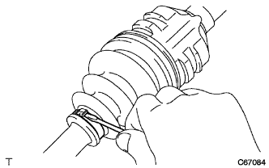
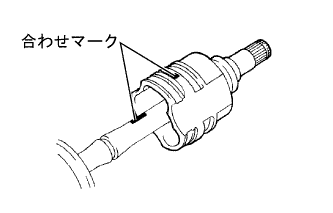
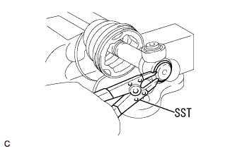
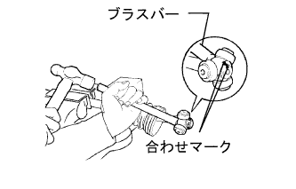
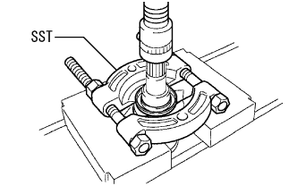

Rear Drive Shaft (4WD) Disassembly |
| 1. Rear Drive Shaft Inboard Joint Boot Clamp LH NO.2 Removal |
 |
Using needle-nose pliers, release the hook portion and remove the clamp.
| 2. Rear Drive Shaft Inboard Joint Boot Clamp LH Removal |
 |
Using a screwdriver, release the staking of the inboard joint boot clamp and disconnect the clamp.
| 3. Drive Shaft Inboard Joint Boot Disconnection |
Disconnect the inboard joint boot from the rear drive shaft inboard joint assembly LH.
| 4. Rear Drive Shaft Inboard Joint Assembly LH Removal |
Remove the grease from the inboard joint.
 |
Put matchmarks on the inboard joint assembly and outboard joint shaft assembly.
Remove the inboard joint.
Secure the outboard joint shaft assembly in a vise between aluminum plates.
 |
Using SST, remove the shaft snap ring.
 |
Put matchmarks on the tripod joint and outboard joint shaft assembly.
Using a brass bar and hammer, remove the tripod joint assembly.
Remove the inboard joint boot clamp No.2 and inboard joint boot.
| 5. Remove Rear Drive Shaft Inboard Joint Snap Ring LH |
 |
Using a screwdriver, remove the snap ring.
| 6. Rear Drive Shaft Dust Cover LH Removal |
 |
Using SST and a press, remove the dust cover.